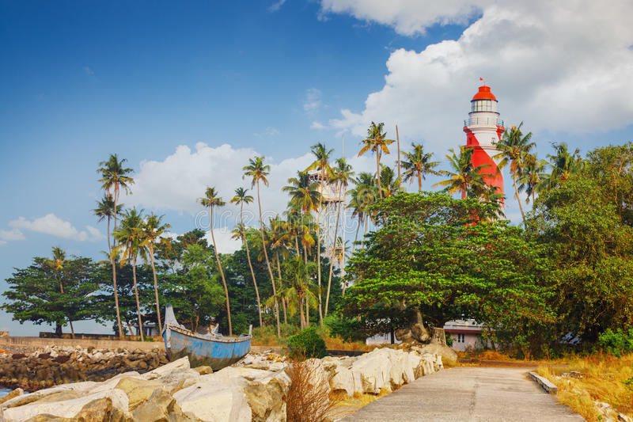
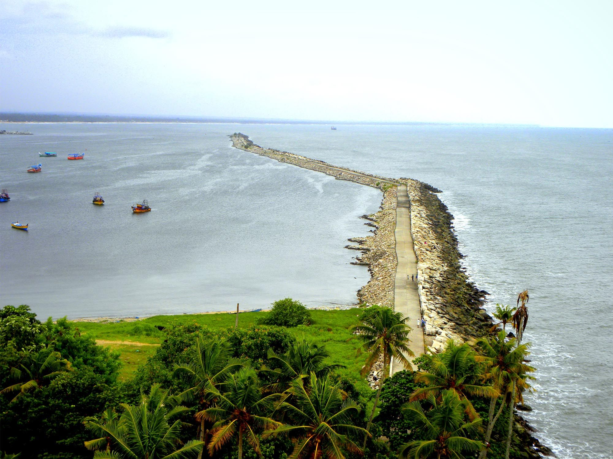

Ashtamudi Lake
Ashtamudi Lake, in the Kollam District of the Indian state of Kerala, is the most visited backwater and lake in the state. Ashtamudi Lake ( Ashtamudi Kayal ), in the Kollam District of the Indian state of Kerala, is the most visited backwater and lake in the state. It possesses a unique wetland ecosystem.

Thangassery LightHouse
Tangasseri Lighthouse or Thangassery Lighthouse is situated at Tangasseri in Kollam city of the Indian state of Kerala. It is one of the two lighthouses in the Kollam Metropolitan Area. Thangassery lighthouse is a hidden gem. The view from the top of the breakwater and small fishing harbor is awesome.

Kollam Beach
Kollam Beach, also known as Mahatma Gandhi Beach, is a beach at Kollam city in the Indian state of Kerala. Kollam Beach is the first 'Beach Wedding Destination' in Kerala. Kollam Beach, also known as Mahatma Gandhi Beach, is a beach at Kollam city in the Indian state of Kerala. Kollam Beach is the first 'Beach Wedding Destination' in Kerala.